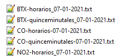

Comenzando cálculos y grabación. Por favor, espere.
Archivos grabados correctamente
1
2
Importante
Los archivos deben estar nombrados con las palabras "quinceminutales" u "horarios" además de llevar el nombre del contaminante en mayusculas. El nombre debe estar separado por guiones bajos o guiones medios
Los datos que hay dentro del archivo deben tener la primera columna que sea la "fecha hora", los datos separados por ";" y los decimales separados por ",". Recordar que para los octohorarios necesitamos 1 día extra de datos para realizar los cálculos. Los datos octohorarios deberán tener un dia extra del año anterior para realizar los cálculos correctamente.